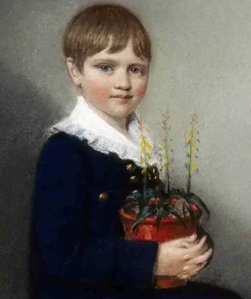
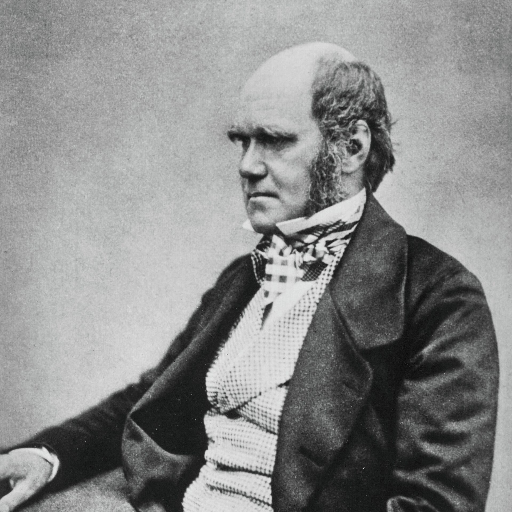

Биография
Дарвин родился 12 февраля 1809 года в семье медика. С самого детства будущий натуралист был увлечён изучением окружающей природы, насекомых и животных, в школе его знания были отмечены весьма посредственными оценки, так как не интересовался языками, философией и риторикой. В университете получал медицинское образование, но быстро понял, что становиться врачом не желает. Также, Дарвин был удостоен сана священника, опять же, по настоянию своего отца.
В период с 1831 по 1836 год, Чарльз совершил кругосветное путешествие. За этот период он расширил свои знания в области биологии и собрал большую коллекцию минералов. Также, ему удалось обнаружить окаменевший экземпляр представителя вымершего вида млекопитающих, который, в последствии, стал одним из наиболее ценных в его собрании. Многие свои наблюдения он подробно записывал в виде заметок в собственном дневнике. Позже, он издал книгу, основанную на этих записях. Она получила широкое признание и распространение в кругу учёных и была переведена на многие языки.
Наиболее значимым вкладом Дарвина в мировую науку является его теория о происхождении видов. Данный труд являлся руководством для последующих исследований учёными эволюции живых организмов. А утверждение Дарвина о том, что человек происходит от обезьяны до сих пор является предметом дискуссий, в которых некоторые учёные с ним соглашаются, а некоторые опровергают данное предположение. Также, натуралист занимался наблюдениями за различными растениями (описал в своём дневнике разнообразные виды и их особенности), насекомыми и животными, разработал теорию о естественном отборе среди разумных живых организмов. Интересно, что к идентичным выводам в своих исследованиях, приблизительно в то же время, что и Дарвин, пришёл другой учёный по фамилии Уоллес.
В 1839 году Дарвин женился на своей кузине Эмме. В этом браке родилось десять детей (трое из которых умерли в младенчестве из-за болезней). Многие потомки Чарльза последовали его примеру и также стали известными исследователями в разных сферах науки и сделали огромное количество важных открытий.
Учёный умер 19 апреля 1882 года. Как при жизни, так и после смерти, он был удостоен множества престижных наград за неоценимый вклад в науку, а его труды являются обязательными к изучению во многих колледжах и университетах.
Научные труды
В 1831 году, по окончании университета, Дарвин в качестве натуралиста отправился в кругосветное путешествие на экспедиционном судне королевского флота «Бигль», откуда вернулся в Англию лишь 2 октября 1836 года. После возвращения из путешествия Дарвин издал книгу, известную под сокращённым названием «Путешествие натуралиста вокруг света на корабле „Бигль“» (1839). Она имела большой успех, и второе, расширенное издание (1845) было переведено на многие европейские языки и множество раз переиздавалось. Дарвин принял также участие в написании пятитомной монографии «Зоология путешествия» (1842). Как зоолог, Дарвин выбрал объектом своего изучения усоногих раков и вскоре стал лучшим в мире специалистом по этой группе. Он написал и издал четырёхтомную монографию «Усоногие раки», которой зоологи пользуются до сих пор.
С 1837 года Дарвин начал вести дневник, в который вносил данные о породах домашних животных и сортах растений, а также соображения о естественном отборе. В 1842 году написал первый очерк о происхождении видов. Начиная с 1855 года Дарвин переписывался с американским ботаником А. Греем, которому через два года и изложил свои идеи. Под влиянием английского геолога и естествоиспытателя Ч. Лайеля Дарвин в 1856 году начал готовить третий, расширенный вариант книги. В июне 1858 года, когда работа была выполнена наполовину, получил письмо от английского натуралиста А. Р. Уоллеса с рукописью статьи последнего. В этой статье Дарвин обнаружил сокращённое изложение своей собственной теории естественного отбора. Два натуралиста независимо и одновременно разработали идентичные теории. На обоих оказала влияние работа Т. Р. Мальтуса о народонаселении, обоим были известны взгляды Лайеля, оба изучали фауну, флору и геологические формации групп островов и обнаружили значительные различия между населяющими их видами. Дарвин отослал Лайелю рукопись Уоллеса вместе со своим собственным очерком, а также набросками его второго варианта (1844) и копией своего письма к А. Грею (1857). Лайель обратился за советом к английскому ботанику Джозефу Гукеру, и 1 июля 1858 года они вместе представили Линнеевскому обществу в Лондоне обе работы. В 1859 году Дарвин опубликовал труд «О происхождении видов с помощью естественного отбора или о сохранении благоприятных рас в борьбе за жизнь», где показал изменчивость видов растений и животных, их естественное происхождение от более ранних видов. Первый тираж в 1250 экземпляров был полностью распродан в течение двух дней. Книга издаётся и продаётся до сих пор.
В 1868 году Дарвин опубликовал свой второй труд на тему эволюции — «Изменение животных и растений в домашнем состоянии», в который вошло множество примеров эволюции организмов. В 1871 году появился ещё один важный труд Дарвина — «Происхождение человека и половой отбор», где Дарвин привёл аргументы в пользу естественного происхождения человека от животных (обезьяноподобных предков). Среди других известных поздних работ Дарвина — «Опыление у орхидных; «Выражение эмоций у человека и животных»; «Действие перекрёстного опыления и самоопыления в растительном мире».